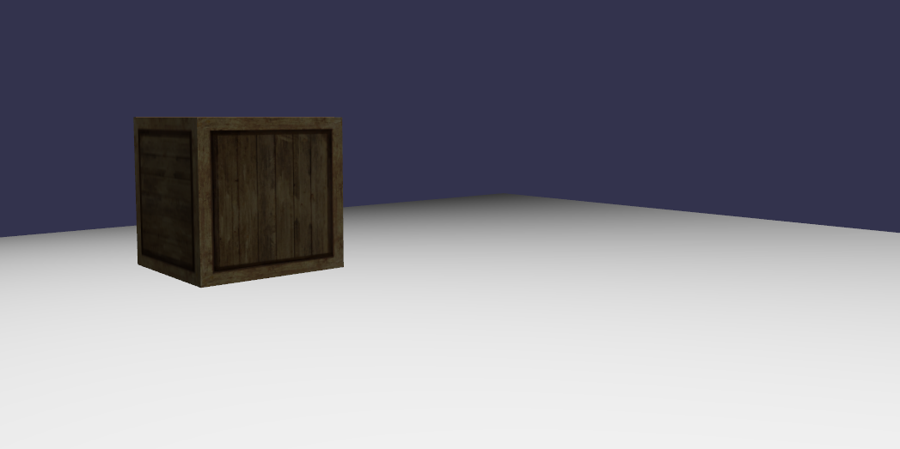

相机、网格碰撞和重力
你曾经玩过FPS（第一人称射击）游戏吗？在这个教程中，我们模拟相同的相机运动：相机在地面上，和地面相碰撞，并且可能与场景中的任何物体碰撞。

最终的效果
怎么做 ?
为了复制这种运动，我们只需要简单的三步:
1 - 定义并且应用重力
第一件要做的事是定义我们的重力向量，定义重力。在一个类似地球的经典世界里，重力的方向是向下的也就是沿着Y轴的负方向，但是我们可以自由改变它！
scene.gravity = new BABYLON.Vector3(0, -9.81, 0);
重力可以被应用在你在前面的代码里定义的任何一个相机上.
camera.applyGravity = true;
2 - 定义一个椭球面
下一个重要的步骤是定义一个包围我们的相机的椭球面。这个椭球面代表着我么的玩家的大小：当一个网格与这个椭球面接触时，一个碰撞事件将会被触发，阻止我们的相机和网格靠得太近。

这个椭球面属性在Babylonjs相机上的尺寸默认是（0.5,1,0.5），但是改变这个值可以让你更高、更大、更小、更瘦，这些都取决于在这些轴上的调整。在下面的例子中，我们将让我们的相机的椭圆面比默认的高一些：
//Set the ellipsoid around the camera (e.g. your player's size)
camera.ellipsoid = new BABYLON.Vector3(1, 1, 1);
3 - 应用碰撞
一旦你完成了前面的那些设定，我们的最后一步就是声明我们对场景中的碰撞检测感兴趣：
// Enable Collisions
scene.collisionsEnabled = true;
camera.checkCollisions = true;
然后声明哪些网格可以与我们的相机相撞:
ground.checkCollisions = true;
box.checkCollisions = true;
就是这样! 非常简单!
你可以测试在这个教程中使用的场景。。。通过访问Babylonjs的playground
demo -
.
现在，你的相机将会沿着y轴下落知道碰到地面。并且，你的相机在距离箱子太近的时候将会碰撞。
4 -物体与物体之间的碰撞
你也可以在网格上做同样的事通过设置 mesh.ellipsoid属性和使用mesh.moveWithCollisions(velocity)函数。这个函数将试着按设定的速度移动网格并将检查当前的网格和其他激活了碰撞检测的网格之间是否有碰撞发生
你也可以使用mesh.ellipsoidOffset属性来移动网格上的椭球面（默认情况下椭球面是以网格为中心的）
var speedCharacter = 8;
var gravity = 0.15;
var character = Your mesh;
character.ellipsoid = new BABYLON.Vector3(0.5, 1.0, 0.5);
character.ellipsoidOffset = new BABYLON.Vector3(0, 1.0, 0);
var forwards = new BABYLON.Vector3(parseFloat(Math.sin(character.rotation.y)) / speedCharacter, gravity, parseFloat(Math.cos(character.rotation.y)) / speedCharacter);
forwards.negate();
character.moveWithCollisions(forwards);
// or
var backwards = new BABYLON.Vector3(parseFloat(Math.sin(character.rotation.y)) / speedCharacter, -gravity, parseFloat(Math.cos(character.rotation.y)) / speedCharacter);
character.moveWithCollisions(backwards);
Dad72提供的示例: 在重力和碰撞下移动角色
基于网页运算器的碰撞系统(从 2.1版开始)
BabylonJS 2.1允许使用者将碰撞计算移动到一个外部的网页运算器中以获得更佳的渲染时间。这个运算器被整合在一个“单框架文件”中，并且不需要开发者做出任何改变。场景现在有了一个新的标志（默认都是false）
scene.workerCollisions = true|false
将这个标志设为true将在后台启动运算器。然后这个运算器将会收到相机和网格发来的碰撞计算请求。设为false将会按照以前的方法处理碰撞。（这相当于在浏览器的原有进程外额外启动一个后台进程专门对碰撞进行异步计算，更充分的发挥多核cpu性能，为浏览器进程中的计算节省时间）
想要了解更多关于运算器整合的信息请访问Raanan Weber的博客:
- https://blog.raananweber.com/2015/05/26/collisions-using-workers-for-babylonjs/
- https://blog.raananweber.com/2015/06/06/collisions-using-workers-for-babylonjs-part-2/
弧形旋转相机
弧形旋转相机同样可以进行碰撞检测，但是它不再沿着障碍物的表面滑动，而是在发生碰撞时停止。
想要激活碰撞，只需要设置 camera.checkCollisions = true.你可以通过以下的代码来定义发生碰撞的半径:
camera.collisionRadius = new BABYLON.Vector3(0.5, 0.5, 0.5)
下一步
伟大的成就，现在你已经可以开发一个真正的FPS游戏了！但是也许你会好奇一个网格在何时与另一个网格相撞？很好，应为这就是我们的目的在下一个教程.